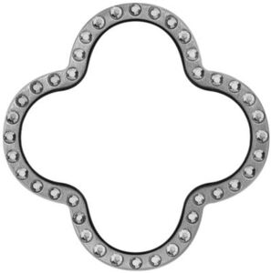

Trade Mark Journal No.2025/029 18 July 2025
WO0000001847163 (11)
Office of origin: Italy
Date of International Registration:11 October 2024
Date of designation in the UK:
11 October 2024

International priority date claimed: 15 April 2024
(Italy)
(302024000063037)
- Class 11
- Apparatus for lighting, heating, steam generating, cooking, refrigerating, drying, ventilating, water supply and sanitary purposes; lighting installations; lighting apparatus; display lighting; wall-mounted lighting apparatus; lighting devices for indoor and outdoor use; lamps and light bulbs; solar lamps; light bulbs, electric; floor lamps; germicidal lamps for purifying air; headlights and downlights; light diffusers; illuminated panels; designer lamps and lamps for architecture; air heating, air cooling, air ventilating, air conditioning and air purifying apparatus, their parts and fittings; water heating, cooling and purifying apparatus, their parts and fittings; water purification, desalination and conditioning installations; water filtration apparatus, devices and installations; water filtering units; apparatus for filtering drinking water and/or for domestic use; electrically controlled water faucets; taps, cocks for pipes and accessories thereof; taps and fittings therefor; mixer taps [faucets]; thermostatic taps; showers; shower cubicles; shower roses; bath tubs; floor-standing washbasins; wash-hand basins [parts of sanitary installations]; basins being part of water supply installations; sinks; toilet seats; toilet bowls; bidets; flushing tanks; sanitary installations; sanitary apparatus and installations; sanitary ware; sanitary water fittings; bathroom installations for sanitary purposes; apparatus for the supply of water for sanitary purposes; saunas; Turkish bath cabinets; steam baths, saunas and spas; bath cubicles; bath fittings; shower fittings; fittings for sanitary purposes; regulating and safety accessories for water and gas installations; terminal water supply fittings; water pressure reducers [regulating accessories]; coffee percolators, electric; coffee capsules, empty, for electric coffee machines; coffee machines incorporating water purifiers; coffee machines; coffee machines, electric.
GESSI S.P.A.
Representative: Abion UK Limited, The Forum, St. Paul's, 33 Gutter Lane London EC2V 8AS UNITED KINGDOM